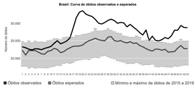
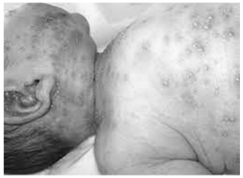
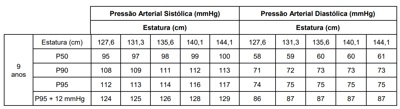
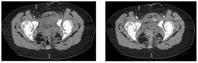
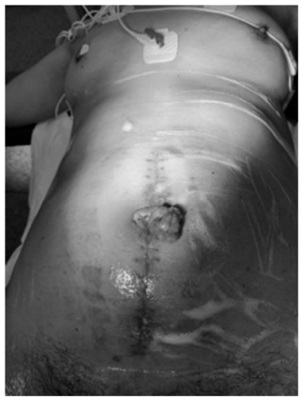
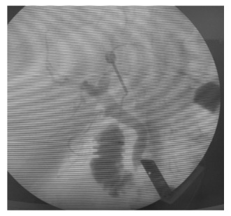
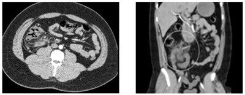
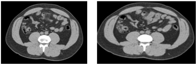
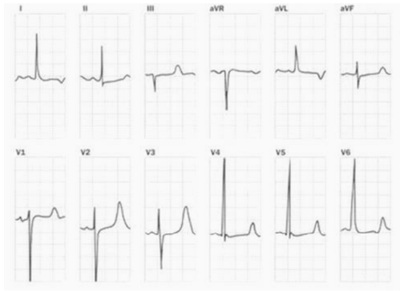

Questão 1 · Vacinas · Ginecologia · 4000169116Referente à vacinação contra o Papiloma Vírus Humano (HPV), pelo Sistema Único de Saúde do Brasil:
A O esquema de vacinação contra o HPV é o mesmo para todas as populações e consiste em duas doses.
B Mulheres imunossuprimidas de 9 a 50 anos de idade podem receber as vacinas contra o HPV.
C Meninas e meninos de 9 a 14 anos podem receber as vacinas contra o HPV.
D A vacina bivalente está aprovada para prevenção de lesões genitais pré-cancerosas do colo do útero e câncer do colo do útero em mulheres, relacionados ao HPV 16 e 18.
E A vacina quadrivalente está aprovada no Brasil para prevenção de lesões genitais pré-cancerosas de colo do útero, vulva e vagina e câncer do colo do útero em mulheres e verrugas genitais em mulheres e homens, relacionados ao HPV 3, 8, 16 e 18.
Questão 2 · Inf ectologia · 4000169115Segundo a Guia de Vigilância Epidemiológica da Covid-19, publicada em 2021, pelo Ministério da Saúde do Brasil, para ns de vigilância, de rastreamento, de isolamento e de monitoramento de contatos, NÃO se deve considerar contato próximo de um caso confirmado de Covid-19, a pessoa que
A apresenta quadro de síndrome gripal com confirmação para Covid-19 por qualquer um dos critérios clínico, clínico-epidemiológico, clínico-imagem ou clínico-laboratorial.
B esteve a menos de um metro de distância, por um período mínimo de 15 minutos, com um caso confirmado, ambos sem máscara facial ou utilizando-a de forma incorreta.
C teve um contato físico direto (por exemplo, apertando as mãos) com um caso confirmado.
D é profissional de saúde que prestou assistência em saúde ao caso de Covid-19 sem utilizar equipamentos de proteção individual (EPIs), conforme preconizado, ou com EPIs danificados.
E seja contato domiciliar ou residente na mesma casa/ambiente (dormitórios, creche, alojamento, entre outros) de um caso confirmado.
Questão 3 · Medicina Preventiva · 4000169114Em relação à epidemiologia da hepatite C, segundo o Boletim Epidemiológico de Hepatites virais de 2021, do Ministério da Saúde do Brasil, é INCORRETO:
A De 1999 a 2020, a maioria de casos notificados confirmados de hepatite C aconteceu na região Nordeste.
B As taxas de detecção dos casos confirmados de hepatite C, para o país e regiões, apresentaram uma diminuição a partir de 2015, quando os critérios para definição de caso confirmado, para fins de vigilância epidemiológica se tornaram mais rigorosos.
C A maior taxa de detecção por 100.000 habitantes dos casos confirmados de hepatite C observou-se na região Nordeste, seguida da região Centro-Oeste.
D Dentre os casos confirmados de hepatite C, observa-se estabilidade na razão de sexos desde 2010, com média de 50 casos em homens para 10 casos em mulheres em 2020.
E Em 2020, as maiores taxas de detecção foram observadas, em ambos os sexos, na faixa etária de 55 a 59 anos.
Questão 4 · Medicina Preventiva · 4000169113Segundo o Manual de Recomendações para o Controle da Tuberculose no Brasil, publicado em 2019, pelo Ministério da Saúde do Brasil, sintomático respiratório é o indivíduo que, durante a estratégia programática de busca ativa, apresenta tosse
A por 3 semanas ou mais.
B por 2 semanas ou mais.
C com ou sem febre, por 4 semanas ou mais.
D com ou sem febre por 2 semanas ou mais.
E com ou sem febre, por 3 semanas ou mais, e radiografia de tórax compatível com tuberculose.
Questão 5 · Medicina Preventiva · 4000169112Em relação à epidemiologia da infecção pelo HIV, segundo o Boletim Epidemiológico de HIV/Aids de 2020, do Ministério da Saúde do Brasil, é INCORRETO:
A No ano de 2019, a região Centro-Oeste foi a região brasileira com o menor número de casos notificados.
B A razão de sexos (masculino:feminino), dentre os casos de infecção, para o ano de 2019, foi de 2,6 (26 homens para cada dez mulheres).
C Entre os casos registrados, no período de 2007 a junho de 2020, a maioria ocorreu entre as pessoas que se autodeclararam negros.
D Entre os casos registrados, no período de 2007 a junho de 2020, em indivíduos maiores de 13 anos de idade e segundo a categoria de exposição, verificou-se que a maioria dos casos entre os homens foi decorrente de exposição homossexual ou bissexual.
E Entre os casos registrados, no período de 2007 a junho de 2020, segundo faixa etária, observou-se que a maioria dos casos estava no grupo de 15 a 25 anos.
Questão 6 · Medicina Preventiva · 4000169111Uma mulher de 30 anos de idade foi diagnosticada com infecção pelo HIV-1. Negou contato com pessoas com tuberculose. Não apresentava nenhum sintoma respiratório ou neurológico. Ao exame físico, estava emagrecida, apresentava candidíase oral e disfagia intensa. Não tinha realizado contagem de linfócitos T-CD4 e o hemograma mostrava 750 (10%) linfócitos totais por mL. A radiogra a de tórax foi normal. O infectologista introduziu cotrimoxazol, isoniazida e terapia antirretroviral. Considerando as informações disponíveis, a prescrição de cotrimoxazol e isoniazida, são exemplos dos seguintes níveis de prevenção, respectivamente:
A Primária e primária.
B Primária e secundária.
C Secundária e secundária.
D Secundária e primária.
E Terciária e primária.
Questão 7 · Medicina Preventiva · 4000169110O rastreamento deve ser realizado para doenças com a seguinte característica:
A baixa prevalência em subgrupos identificáveis da população.
B taxa de letalidade baixa.
C história natural que possa ser alterada por intervenção médica.
D diagnóstico rápido e fácil.
E tropicais negligenciadas.
Questão 8 · Medicina Preventiva · 4000169109São critérios usados pela Sociedade Americana de Câncer, em suas recomendações sobre exames diagnósticos da doença:
A Evidências de que um teste, ou procedimento recomendado, é efetivo na redução da mortalidade, não havendo referência ao impacto na morbidade.
B Em mamas mais densas a sensibilidade é alta, gerando poucos resultados falsos-negativos.
C A mamografia tem alta sensibilidade para identificar lesões cancerosas mamárias em mulheres após a menopausa.
D A presença e frequência de falsos-positivos é uma consideração na hora de selecionar testes que façam parte de programas de triagem de câncer.
E O custo de cada teste, ou procedimento, não tem relevância para a decisão médica.
Questão 9 · Medicina Preventiva · 4000169108Estudo de coorte prospectivo identi cou que a vacina contra gripe, em grupos de alto risco, evitou 50% das internações por essa doença. Esta característica da vacina corresponde a:
A efetividade
B eficácia
C eficiência
D custo-efetividade
E custo-utilidade
Questão 10 · Medicina Preventiva · 4000169107Um estudo identi cou que obesidade associou-se significativamente à mortalidade em pacientes hospitalizados por Covid- 19 ( Odds ratio causalidade é:
A Relação temporal.
B Força da associação.
C Relação dose-resposta.
D Reprodutibilidade dos achados.
E Eliminação da exposição.
Questão 11 · Medicina Preventiva · 4000169106Um grupo de pesquisadores planeja realizar estudo que tem por objetivo avaliar a prevalência de anticorpos anti-SARS-CoV- 2 entre profissionais da área da saúde de dois hospitais terciários. O melhor desenho do estudo para atingir esse objetivo é
A Transversal.
B Caso-controle.
C Coorte prospectivo.
D Coorte retrospectivo.
E Experimental.
Questão 12 · Estudos de f ase IV e Farmacovigilância · 4000169105Em relação aos estudos clínicos de fase IV, é INCORRETO:
A Podem identificar eventos adversos não reconhecidos nos estudos de fase III.
B Podem identificar maior frequência de eventos adversos não reconhecidos nos estudos de fase III.
C Os ensaios de fase IV também são chamados estudos de vigilância pós-comercialização.
D Podem ser randomizados.
E Podem promover evidências adicionais de benefícios do novo medicamento.
Questão 13 · Medicina Preventiva · 4000169104A razão entre as taxas de sobrevida observada e esperada se denomina
A excesso de sobrevida.
B mediana de sobrevida especifica.
C taxa de letalidade relativa.
D mediana de sobrevida global.
E taxa de sobrevida relativa.
Questão 14 · Valor Preditivo Negativo · 4000169103Um estudo avaliou o desempenho do exame físico no rastreamento de câncer de mama. Foram incluídas 2.500 mulheres com adenocarcinoma, comprovado por biópsia (Grupo 1). Também foram incluídas 5.000 mulheres sem evidência de câncer na biópsia de mama (Grupo 2). Ambos os grupos foram pareados por idade. Os resultados do exame físico foram positivos em 1.800 mulheres do Grupo 1 e em 800 mulheres do Grupo 2. Nesse estudo, o valor preditivo negativo do exame físico foi
A 69,2%
B 72%
C 80%
D 84%
E 85,7%
Questão 15 · Medicina Preventiva · 4000169102Um estudo avaliou o desempenho do exame físico no rastreamento de câncer de mama. Foram incluídas 2.500 mulheres com adenocarcinoma, comprovado por biópsia (Grupo 1). Também foram incluídas 5.000 mulheres sem evidência de câncer na biópsia de mama (Grupo 2). Ambos os grupos foram pareados por idade. Os resultados do exame físico foram positivos em 1.800 mulheres do Grupo 1 e em 800 mulheres do Grupo 2. Nesse estudo, a sensibilidade do exame físico foi
A 69,2%
B 72%
C 80%
D 84%
E 85,7%
Questão 16 · Medicina Preventiva · 4000169101Paciente trabalhador de construção civil sofreu queda de andaime, resultando em fratura de fêmur. Precisou ser submetido à cirurgia. Evoluía adequadamente, mas adquiriu infecção relacionada à assistência à saúde, vindo a falecer por broncopneumonia. Observe a seguinte declaração de óbito A melhor opção para o preenchimento do campo
A Cirurgia.
B Fratura de fêmur.
C Broncopneumonia.
D Queda de escada.
E Ação contundente.
Questão 17 · Medicina Preventiva · 4000169100A gerente de uma empresa privada de planos de saúde precisa identi car grupos de pessoas que se bene ciariam de um a intervenção voltada a reduzir incapacidades prematuras. A gerente solicita que um funcionário dessa empresa desenvolva uma proposta que utilize um indicador para auxiliá-la a tomar essa decisão. O indicador que serviria melhor para esse propósito é:
A Taxa de letalidade.
B Taxa bruta de mortalidade.
C Anos de vida perdidos ajustados por incapacidade.
D Taxa de mortalidade padronizada.
E Excesso de incapacidade.
Questão 18 · Medicina Preventiva · 4000169099Um estudo de prevalência, em uma cidade com dois milhões de habitantes, foi conduzido de 1º de janeiro a 31 de dezembro de 2019. Foram identi cados 1.000 casos de hipertensão, com taxa de incidência de 5/100.000 pessoas/ano. O percentual da população com hipertensão foi:
A 5%
B 10%
C 15%
D 20%
E 25%
Questão 19 · Medicina Preventiva · 4000169098Observe o gráfico abaixo. (Disponível em: O aumento do número de mortes, durante uma pandemia, versus a média dos últimos anos antes da pandemia, pode ser definido como

A excesso de mortalidade.
B diferença de letalidade.
C taxa de mortalidade específica.
D taxa de letalidade.
E média anual de mortes.
Questão 20 · Medicina Preventiva · 4000169097A doença de Chagas é endêmica em vários países das Américas. Uma doença endêmica é aquela que
A ocorre em taxa superior à esperada.
B está habitualmente presente em populações humanas.
C afeta grande número de países simultaneamente.
D exibe um padrão sazonal.
E é prevalente entre animais.
Questão 21 · Obstetrícia · 4000169096Primípara, 39 anos de idade, hipertensa, encontra-se em trabalho de parto há 5 horas, refere sensação de desmaio repentino e forte dor abdominal. Exame físico: PA: 140 × 100 mmHg, Pulso: 110 bpm, DU: 5/10 minutos com contrações com duração de 1 minuto, foco fetal: 100 bpm, toque: 2 cm de dilatação, centralizado, sangramento vaginal moderado com coágulos. O diagnóstico mais provável é:
A Franco trabalho de parto.
B Sangramento devido à cervicodilatação.
C Eclâmpsia intraparto.
D Descolamento prematuro de placenta.
E Rotura uterina de primeiro grau.
Questão 22 · Interpretação e conduta f rente as atipias citológicas · 4000169095A recomendação correta frente a um resultado alterado na citologia cervicovaginal com
A lesão de alto grau (HSIL) é colher DNA-HPV em 12 meses.
B AGC (células glandulares atípicas de significado indeterminado) é repetir citologia em 6 meses.
C AOI (células atípicas de origem indefinida) é repetir citologia em 6 meses.
D lesão de baixo grau (LSIL) é repetir citologia em 6 meses.
E ASCUS entre 25 a 29 anos de idade é repetir citologia em 12 meses.
Questão 23 · Ginecologia · Diagnóstico · Classif icação · 4000169094Mulher de 60 anos de idade, IIIG IIIPartos normais refere bola na vagina e foi examinada pelo residente de primeiro ano, que fez a seguinte classificação POP-Q: Aa=+1; Ba=+2; C=+8; Ap=0; Bp=0; D=−; HG=5; CP=2; CVT=8. O diagnóstico clínico é:
A Prolapso uterino de 2º grau.
B Enterorretocele.
C Rotura perineal de 2º grau.
D Prolapso de cúpula vaginal.
E Cistocele grau III.
Questão 24 · Ginecologia · Terapia hormonal · 4000169093Mulher de 65 anos de idade refere sudorese noturna e ondas de calores há vários anos. Relutou fazer terapia hormonal (TH) pelo medo de câncer de mama, mas atualmente está querendo fazer pois reparou que as amigas que fazem TH têm mais qualidade de vida. Nega comorbidades, nunca fez cirurgia. É nuligesta. Menopausa aos 49 anos. Nega tabagismo. A conduta mais adequada é:
A Prescrever estradiol e drospirenona via oral.
B Prescrever estradiol transdérmico e progesterona via oral.
C Orientar que pelos riscos cardiovasculares não se indica TH sistêmica após os 10 primeiros anos de pós- menopausa, ou acima de 60 anos.
D Prescrever testosterona gel transdérmico.
E Prescrever tibolona via oral.
Questão 25 · Inf ectologia · 4000169092Em relação ao diagnóstico e tratamento da sífilis, é correto afirmar:
A Na gestante com sífilis latente pode-se prescrever ceftriaxona 2 gramas endovenoso por 7 dias.
B O tratamento alternativo da sífilis primária é com doxiciclina 100mg 12/12 horas por 7 dias.
C A sífilis latente tardia é tratada com benzilpenicilina 1,2 milhão UI endovenoso semanal por 5 semanas.
D O exame de líquor é realizado mensalmente na neurossífilis até a sua normalização.
E Teste não-treponêmico reagente e teste treponêmico não reagente pode significar cicatriz sorológica.
Questão 26 · Obstetrícia · 4000169091São marcadores ultrassonográficos de trissomia de 21:
A Inserção abdominal anômala do cordão umbilical, ausência da bexiga.
B Ventriculomegalia, intestino hiperecogênico.
C Pé torto congênito, ausência de bolha gástrica.
D Oligoâmnio, ausência renal unilateral.
E Lesões císticas pulmonares, foco ecogênico intracardíaco.
Questão 27 · Obstetrícia · 4000169090Primigesta de 32 anos, 30 semanas de gestação, refere ardência ao urinar há 1 dia além de sangramento na urina. Nega febre ou dor lombar. Sem queixas obstétricas. A conduta mais adequada é:
A Prescrever fosfomicina trometamol em dose única.
B Aguardar resultado da urina I e urocultura para prescrição de antibiótico adequado.
C Prescrever anti-inflamatório não hormonal por 3 dias.
D Prescrever norfloxacino por 5 dias.
E Prescrever macrodantina diária até o parto.
Questão 28 · Inf ectologia · 4000169089NÃO é comum observar nas infecções sexualmente transmissíveis a ocorrência de:
A úlceras genitais.
B corrimento vaginal.
C corrimento uretral.
D infecção urinária.
E verrugas anogenitais.
Questão 29 · Pediatria · Puberdade Precoce Perif érica · 4000169088Entre as causas de puberdade precoce periférica, destaca-se:
A hidrocefalia.
B mutação do gene DLK1.
C hamartoma.
D cisto ovariano funcional.
E exposição prévia a hormônio.
Questão 30 · Desenvolvimento dos ductos genitais · Ginecologia · 4000169087Das opções abaixo, é considerada Malformação Mulleriana não obstrutiva:
A Síndrome de Mayer-Rokitansky-Küster-Hauser.
B Corno uterino não comunicante.
C Atresia do colo uterino.
D Septo vaginal imperfurado oblíquo.
E Agenesia do terço inferior da vagina.
Questão 31 · Obstetrícia · 4000169086Gestante de 32 anos de idade, com 12 semanas, comparece a sua primeira consulta de pré-natal. Não refere nenhum antecedente pessoal e não faz uso de nenhuma medicação. Tem PA: 120 × 80 mmHg e IMC: 29 kg/m². O exame obstétrico é compatível com a idade gestacional. Traz resultado de exames solicitados na UBS e coletados há uma semana, sem ter feito jejum: hemoglobina: 12 mg/dL, plaquetas: 180 mil/mm³, glicemia: 210 mg/dL, sorologias todas negativas. Nesse caso,
A caracteriza-se diabetes gestacional.
B é necessário repetir a glicemia com jejum adequado para diagnóstico de diabetes.
C caracteriza-se diabetes
D é fundamental a realização de teste oral de tolerância à glicose antes de considerá-la diabética.
E considera-se normal o resultado da glicemia, já que não foi feita em jejum, devendo ser repetida no próximo mês.
Questão 32 · Obstetrícia · 4000169085Durante a gravidez, a produção de leite materno está inibida pois
A não existe ainda a sucção mamilar, responsável pela liberação de ocitocina que aumenta a produção láctea.
B os receptores de prolactina nos alvéolos estão inibidos pelas elevadas concentrações de progesterona e de hormônio lactogênico placentário.
C os níveis de prolactina só aumentam após o descolamento placentário.
D os níveis altos de estrogênios mantêm a prolactina em baixas concentrações até próximo ao parto.
E o hormônio lactogênico placentário estimula os receptores mamários de prolactina somente após a dequitação.
Questão 33 · Endometriose · 4000169084Mulher de 25 anos de idade teve diagnóstico de endometriose peritoneal durante laparoscopia indicada por dismenorreia há 2 meses. Nesse procedimento, foram cauterizados focos super ciais e realizada cromotubagem que mostrou tubas pérvias. Como ela pretende engravidar a partir de agora, recomenda-se
A sugerir inseminação intrauterina pela infertilidade relacionada à endometriose.
B indicar gestrinona por 6 meses antes de tentar engravidar.
C indicar uma dose de análogo de GnRh de duração de um mês.
D realizar histerossalpingografia e espermograma para avaliar outros fatores de infertilidade.
E liberar o casal para tentar gestação.
Questão 34 · Ginecologia · Tumores ovarianos benignos · 4000169083Mulher de 50 anos de idade é operada por volumoso tumor ovariano. Durante a cirurgia, houve extravasamento do conteúdo do tumor, que foi prontamente aspirado e a cavidade exaustivamente lavada. O resultado anatomopatológico mostrou se tratar de cistoadenoma mucinoso de ovário. Nesse caso, há risco de a paciente desenvolver
A ascite líquida recorrente.
B carcinomatose peritoneal.
C recidiva tumoral.
D derrame pleural.
E pseudomixoma peritoneal.
Questão 35 · Câncer de mama · 4000169082A transmissão genética do câncer de mama por mutação do BRCA1 é considerada
A recessiva ligada ao X.
B autossômica dominante com baixa penetrância.
C autossômica dominante com elevada penetrância.
D autossômica recessiva.
E autossômica dominante ligada ao X.
Questão 36 · Obstetrícia · 4000169081Durante o trabalho de parto, o médico identi ca a necessidade de realizar anestesia por bloqueio de pudendo. Para aplicar o anestésico, ele deve palpar
A a borda lateral do forame obturatório.
B a espinha isquiática.
C o ligamento cardinal.
D o ligamento sacroespinhal.
E a eminência ileopectínica.
Revisar: possível letra faltando em enunciado
Questão 37 · Obstetrícia · 4000169080A gestação gemelar pode ser classificada em: I. monocoriônica e monoamniótica. II. monocoriônica e diamniótica. III. dicoriônica e diamniótica. É correto afirmar que gêmeos idênticos podem ser oriundos de
A I, II ou III.
B I, somente.
C I ou II, já que a III origina gêmeos fraternos.
D I em 100% e II em 50% das gestações.
E II em 100% e I em 50% das gestações.
Questão 38 · Obstetrícia · 4000169079Primigesta de 28 anos de idade, 40 semanas de gestação, em trabalho de parto há 2 horas. Pré-natal sem intercorrências. Peso estimado do feto ao ultrassom de 3.500 g. Encontra-se com altura uterina de 34 cm, dilatação de 2 cm, colo esvaecido (45%), consistência amolecida, anteriorizado e apresentação fetal em −1 de DeLee. Com essas informações, o índice de Bishop é
A 9, muito favorável ao parto vaginal sem episiotomia.
B 5, inconclusivo sobre evolução para distocia funcional.
C 8, favorável ao parto vaginal.
D 2, indicando alto risco de parto instrumentalizado.
E 6, inconclusivo, devendo ser reavaliado em 3 a 4 horas.
Questão 39 · Modif icações f isiológicas · Ginecologia · 4000169078Mulher de 53 anos de idade, sem menstruar há mais de um ano, procura atendimento de rotina. Nega fogachos, ressecamento vaginal e insônia. Como suas amigas da mesma idade têm essas queixas com frequência, ela gostaria de saber por que isso não acontece com ela. Ao exame, apresenta PA: 135 × 80 mmHg, IMC: 38 kg/m2. Vagina com rugosidade preservada, umidade presente. Útero de difícil avaliação pelo panículo adiposo aumentado. Uma das possíveis causas de ausência de sintomas climatéricos nessa paciente é a presença de
A aromatase nos adipócitos que converte o excesso de estrona em estradiol.
B níveis estrogênicos altos por conversão de androgênios em estrogênios no tecido adiposo.
C resistência insulínica, que promove intensa conversão da estrona em estradiol.
D síndrome dos ovários policísticos, que cursa com aumento de estrogênios circulantes na pós-menopausa.
E aromatase produzida pela teca interna, que converte progestágenos em estrogênios nos adipócitos.
Questão 40 · DIU de cobre · 4000169077O DIU não-hormonal é considerado um método contraceptivo reversível de longa ação que pode estar muito bem indicado para mulheres
A multíparas com adenomiose e dismenorreia.
B multíparas com mioma que tenha mais de 50% de seu volume na região submucosa.
C multíparas com ciclos de intervalo de 25 dias e duração de 10 dias.
D nuligestas na faixa etária de 18 a 20 anos.
E nuligestas com síndrome de Von Willebrand.
Questão 41 · Impetigo bolhoso · Dermatologia · 4000169076Menino de 4 anos apresenta há uma semana, em perna esquerda, vesículas e bolhas cheias de líquido amarelado e pústulas que, quando rompem, deixam no lugar uma lesão vermelho-vivo, in amada e úmida, que não dói. Criança está afebril, em bom estado geral e sem outras queixas. Entre as seguintes opções, o diagnóstico mais provável e o agente etiológico mais comum são:
A Impetigo crostoso −
B Impetigo crostoso −
C Impetigo bolhoso −
D Impetigo bolhoso −
E Impetigo bolhoso −
Questão 42 · Icterícia Fisiológica · 4000169075Recém-nascido de termo (38 semanas), sexo feminino, nascido de parto normal, mãe primigesta, Apgar 9/9/9, peso de nascimento 3.200 g, evolui às 40 horas de vida com icterícia zona II de Kramer. Mãe O+ e RN A+. Bilirrubina total: 8 mg/dL Coombs indireto negativo. Dentre as seguintes condutas, a melhor para este caso é
A colher BTF, hemograma com reticulócitos, Coombs direto e indireto e dosagem G6PD.
B iniciar fototerapia com bilispot único.
C alta com orientações gerais e indicações de retorno.
D iniciar fototerapia com bilispot duplo.
E colher BTF, Coombs direto e indireto e dosagen G6PD.
Questão 43 · Síndrome dos ovários policísticos · 4000169074Adolescente de 16 anos, sexo feminino, procura a UBS por notar aumentos dos pelos em todo corpo, inclusive face e ganho de peso (8 kg) nos últimos seis meses. Apresentou menarca há dois anos e depois evoluiu com ciclo menstrual irregular. A última menstruação foi há dois meses. O principal hormônio envolvido nos sintomas da principal hipótese diagnóstica desta paciente, dentre os abaixo, é
A prolactina.
B folículo estimulante.
C luteinizante.
D testosterona.
E estrogênio.
Questão 44 · Síndrome de Lise Tumoral SLT · Síndrome de Lise Tumoral · Síndrome de lise tumoral SLT · 4000169073A síndrome de lise tumoral pode ocorrer durante o início do tratamento de algumas doenças onco-hematológicas. As alterações comumente encontradas nessa síndrome são:
A hiperuricemia, hipocalcemia, hipofosfatemia.
B hiperuricemia, hipocalemia, hipercalcemia.
C hiperuricemia, hipercalemia, hiperfosfatemia.
D hipercalcemia, hipercalemia, hipofosfatemia.
E hiperuricemia, hipocalemia, hiperfosfatemia.
Questão 45 · Anatomia Testicular e do Cordão Espermático · Cirurgia · 4000169072Fernando, 14 anos, inicia quadro de dor testicular de início há duas horas após treino de s e aumento do volume escrotal e hiperemia e calor local. Re exo cremastérico ausente e a dor não melhora com a elevação do testículo (sinal de Prehn negativo). Entre as seguintes hipóteses diagnósticas, a mais provável para este caso é
A torção testicular.
B trauma testicular contuso.
C tumor de testículo.
D orquiepedidimite.
E varicole.
Questão 46 · Candidíase mamária materna e oral no bebê · Obstetrícia · Traumas mamilares ou mamilos doloridos · 4000169071Joana, primigesta, comparece na consulta de seguimento de seu lho de 2 meses de idade, que está em aleitamento exclusivo. Refere dor e ardor no mamilo esquerdo, prurido e “ sgadas” que se irradiam para o interior da mama durante a amamentação. O exame das mamas revela hiperemia dos mamilos e aréolas, que se mostram brilhantes, com aspecto friável. Exame físico do lactente sem alterações. Dentre as seguintes propostas terapêuticas, a melhor para este caso é
A nistatina tópica para mãe.
B nistatina tópica para mãe e lactente.
C neomicina tópica para mãe.
D compressas mornas na mama.
E cefalexina para mãe.
Questão 47 · Púrpura de HenochSchöinleinVasculite por IgA · Pediatria · 4000169070Pré-escolar, sexo masculino, 4 anos, foi levado por sua mãe a uma Unidade de Pronto Atendimento com história de lesões avermelhadas em pernas, dores em joelhos e dor abdominal que piorava às refeições. Exame físico: lesões purpúricas em membros inferiores, artrite em tornozelos. O hemograma estava normal e o exame de urina apresentava hematúria discreta. Dentre as seguintes alterações patológicas vasculares, a que mais provavelmente está presente neste paciente é:
A inflamação granulomatosa com células gigantes e aneurismas.
B depósitos mistos de células, eosinófilos e imunoglobulina A.
C inflamação eosinofílica da microcirculação pulmonar.
D granuloma necrotizante extravascular.
E necrose fibrinoide com microaneurismas em vários estágios de evolução.
Questão 48 · Sarampo · 4000169069Pré-escolar, sexo masculino, três anos, vem apresentando febre, seguida pelo aparecimento de conjuntivite, tosse, coriza e lesões avermelhadas no corpo há 3 dias. Exame físico: enantema ao nível dos pré-molares, erupção maculopapular avermelhada principalmente em face, tronco, extremidades e palmas das mãos. Com relação à principal hipótese diagnóstica deste caso, é correto afirmar que
A não evolui para encefalite crônica.
B uma complicação tardia benigna é a panencefalite esclerosante.
C complicações comuns em adolescentes são crupe e traqueíte.
D o uso de antibioticoterapia melhora o prognóstico.
E pode evoluir com pneumonia de células gigantes.
Questão 49 · Mães inadequadamente tratadas · 4000169068Primigesta de 23 anos, com 38 e 3/7 semanas de idade gestacional, chega à maternidade em trabalho de parto. No cartão de pré-natal consta que a gestante na 1ª consulta, com 18 semanas, a gestante apresentou teste rápido para sí lis reagente com VDRL de 1:64. Foi prescrita penicilina benzatina e a paciente recebeu três doses de 1.200.000 UI (1 vez por semana). Durante o seguimento, o VDRL reduziu até 1:16. Colhido VDRL da puérpera na maternidade, que foi de 1:64. Entre as seguintes propostas de manejo para o recém-nascido desta paciente, a mais indicada é realizar
A MHA-TP em sangue de cordão, hemograma completo, Rx de ossos longos e coletar o líquor (celularidade, glicorraquia, proteinorraquia e VDRL).
B VDRL sérico, hemograma completo, Rx de ossos longos e provas de função hepática.
C VDRL em sangue de cordão, hemograma completo, Rx de ossos longos e iniciar o tratamento com Benzilpenicilina procaína intramuscular.
D VDRL sérico, hemograma completo, glicemia, Rx de ossos longos e coletar o líquor (celularidade, glicorraquia, proteinorraquia e VDRL).
E MHA-TP no líquor e se negativo, prescrever Benzilpenicilina benzatina intramuscular, dose única.
Questão 50 · Endocrinologia · 4000169067Adolescente, sexo masculino, 16 anos, procurou a Emergência de um hospital com quadro de anorexia, náusea, vômito, dor abdominal, fraqueza, astenia, mialgia, perda de peso e hipotensão postural. Tem diagnóstico de asma grave desde os 6 anos de idade mas, atualmente, abandonou o seguimento. Estava fazendo uso de corticoide inalatório oral de forma irregular e há três meses vem tomando corticoides orais, quando crise, de forma intermitente. Há três dias fez uma viagem para a casa de parentes e não levou suas medicações. Ao exame físico encontrava-se em REG, afebril, desidratado, descorado e hipotenso. Entre as seguintes hipótese diagnósticas, a mais provável para este paciente é
A insuficiência adrenal secundária.
B insuficiência adrenal terciária.
C síndrome de Cushing.
D doença de Cushing iatrogênica.
E doença de Addison.
Questão 51 · Exame f ísico do Recémnascido · 4000169066Recém-nascido, sexo feminino, 39 semanas e 4 dias de idade gestacional, nasceu de parto normal com Apgar 9 (1’) e 10 (5’). Peso: 3.270 g sem risco infeccioso. No exame sumário da sala de parto, recém-nascido vigoroso, em bom estado geral, com presença de lesões vesicopustulosas super ciais ( figura abaixo), sem outras anormalidades ao exame físico. Com 48 horas, já apresentava algumas lesões com crosta e manchas hiperpigmentadas. Entre as seguintes hipóteses diagnósticas, a mais provável para esse recém-nascido é

A impetigo neonatal.
B eritema tóxico neonatal.
C melanose pustular transitória neonatal.
D foliculite pustular eosinofílica.
E candidíase congênita.
Questão 52 · Doença por lesões mínimas · Nef rologia · 4000169065Criança de 2 anos e 3 meses de idade é internada em enfermaria com quadro clínico de edema generalizado, frio e depressível. A história revela um quadro insidioso e, recentemente, os pais notaram os “olhos inchados”, aumentando progressivamente. Ao exame físico: criança tem bom contato, com aspecto neurológico normal, afebril, acianótica e anictérica. Exames laboratoriais: albuminemia de 2,0 g/dL, proteinúria de 55 mg/kg/dia e hematúria microscópica. Entre as seguintes hipóteses patológicas, a mais provável para este caso é glomerulonefrite
A difusa aguda.
B pseudomembranosa.
C membranoproliferativa.
D por lesões mínimas.
E rapidamente progressiva.
Questão 53 · Tratamento da púrpura trombocitopênica imunológica PTI · 4000169064Criança, 9 anos de idade, sexo feminino, é internada com diagnóstico de púrpura trombocitopênica idiopática (trombocitopenia imune). A criança apresenta petéquias, sem sangramento ativo. A contagem de plaquetas revela 40.000 plaquetas. A melhor conduta inicial, dentre as abaixo, para este caso é:
A corticoide e imunoglobulina humana intravenosa.
B imunoglobulina humana intravenosa.
C pulso de corticoide.
D observação clínica e seguimento laboratorial.
E transfusão de plaquetas.
Questão 54 · Intoxicações Exógenas · Síndrome Adrenérgica · 4000169063Criança de 2,5 anos, sexo masculino, foi levada ao pronto-socorro com suspeita de ter ingerido uma caixa de medicamentos. Pais referem que a criança estava brincando com caixas de remédios, com diversos comprimidos no chão e outros na boca. Ao exame físico, o paciente apresenta-se agitado, face avermelhada, com temperatura de 37,8 °C, taquicárdica, pressão arterial de 110 × 80 mmHg, midriática, com boca e olhos secos e FR: 42 ipm. Dentre os seguintes medicamentos, o que mais provavelmente corresponde ao quadro da criança é
A Amiodarona 200 mg.
B Sertralina 50 mg.
C Diazepam 10 mg.
D Levotiroxina 50 mg.
E Loratadina 10 mg.
Questão 55 · Pediatria · Classif icação e Tratamento da Crise · 4000169062Escolar de 6 anos de idade, asmático, chegou ao pronto atendimento com queixa de di culdade para respirar iniciada ho je. Nega febre. Refere não ter usado nenhuma medicação. Ao exame físico apresenta di culdade para conversar, utilizando frases curtas e pausadas, preferindo car sentado. Consciente, orientado, corado, hidratado, anictérico, BRNF sem sopros, FC: 110 bpm. Murmúrio vesicular diminuído com sibilos intensos, utilizando musculatura torácica acessória. FR: 28 ipm e SatO₂: 92% em ar ambiente. Abdome sem alterações. Tempo de enchimento capilar normal. Entre as seguintes propostas terapêuticas, a conduta inicial mais adequada para este caso é
A salbutamol inalatório a cada 20 min. na 1ª hora.
B salmeterol inalatório e reavaliação em 20 min.
C salbutamol inalatório a cada 20 min. na 1ª hora e metilprednisolona endovenosa.
D salmeterol inalatório, metilprednisolona endovenosa e reavaliação em 20 min.
E salbutamol inalatório a cada 20 min. na 1ª hora e prednisolona oral.
Questão 56 · Passos iniciais · 4000169061Recém-nascido de 35 e 2/7 semanas nasceu de parto cesárea apresentando choro e tônus em exão. Após o desprendimento do concepto, a sequência correta para o atendimento deste paciente é:
A secar – calor – avaliar frequência cardíaca – avaliar frequência respiratória.
B secar – calor – cabeça em leve extensão – aspirar boca e narinas se necessário.
C calor – cabeça em leve extensão – aspirar boca e narinas se necessário – secar.
D avaliar frequência cardíaca – avaliar frequência respiratória – secar – calor.
E avaliar frequência respiratória – avaliar frequência cardíaca – secar – calor.
Questão 57 · Complicações · Pediatria · 4000169060Paciente de 2 anos de idade, com diagnóstico de insu ciência respiratória aguda devido a pneumonia extensa à direita, fo i intubado sem intercorrências pelo pediatra que utilizou uma sequência rápida de intubação. A cânula escolhida foi calculada de acordo com a idade do paciente. Entre os seguintes métodos, o padrão-ouro para o ajuste do posicionamento da cânula traqueal nesse paciente é
A radiografia de tórax.
B ausculta pulmonar.
C monitoramento da complacência pulmonar.
D capnografia.
E saturação de oxigênio ao oxímetro de pulso.
Questão 58 · Diagnóstico · Tratamento de Manutenção · Pediatria · 4000169059Criança de 5 anos de idade apresenta episódios mensais de tosse, dispneia e sibilos. Mãe refere que esses episódios atrapalham o sono e são responsáveis por faltas frequentes à escola. O último foi há 10 dias. Queixa-se também que a pele de seu lho é seca com lesões eritematosas e pruriginosas. Antecedentes familiares: mãe com rinite; pai teve asma quando criança e uma irmã com asma e rinite. Entre as seguintes propostas terapêuticas, a mais apropriada para este caso é
A antagonista dos receptores dos leucotrienos;
B corticoide inalatório;
C corticoide inalatório;
D corticoide inalatório;
E antagonista dos receptores dos leucotrienos;
Questão 59 · Pediatria · Tratamento · 4000169058Criança de 7 anos de idade foi levada à Unidade básica de Saúde por tosse há 4 semanas, redução do apetite e perda de peso. Após investigação adequada, foi feita a hipótese de tuberculose pulmonar. O tratamento indicado, neste caso, segundo as recomendações do Ministério da Saúde, é Isoniazida, Rifampicina e Pirazinamida
A e Etambutol por 2 meses, seguido por Isoniazida e Rifampicina por 4 meses.
B por 2 meses, seguido por Isoniazida e Rifampicina por 4 meses.
C por 4 meses, seguido por Isoniazida e Rifampicina por 2 meses.
D e Etambutol por 4 meses, seguido por Isoniazida e Rifampicina por 2 meses.
E por 2 meses, seguido por Isoniazida e Rifampicina por 6 meses.
Questão 60 · Def inição e classif icação · Pediatria · 4000169057Em consulta de rotina, uma paciente de 9 anos de idade, sexo feminino, sem queixas, apresentou peso de 30 kg, altura de 1,30 m e pressão arterial (PA) de 110 × 70 mmHg, aferida adequadamente e confirmada mais duas vezes. (Sociedade Brasileira de Pediatria. Com base na tabela acima, a classificação da pressão arterial desta paciente é

A pressão arterial baixa.
B pressão arterial normal.
C hipertensão estágio I.
D hipertensão estágio II.
E pressão arterial elevada.
Questão 61 · Cirurgia Torácica · Cirurgia · 4000169056Um paciente de 29 anos está no 4º dia de drenagem de tórax por hemotórax traumático associado a fratura de dois arcos costais. Não tem outras afecções. Após avaliação, o cirurgião decide retirar o dreno. Qual deve ser a recomendação?
A Manter o curativo oclusivo, após a retirada do dreno, sem trocar por, pelo menos, 5 dias.
B Infiltrar previamente o espaço intercostal com anestésico local.
C Retirar no final da expiração ou da inspiração, desde que mantida a manobra de Valsalva.
D Retirar somente ao final da inspiração.
E Retirar somente ao final da expiração.
Questão 62 · Conduta · Diagnóstico · Cirurgia · 4000169055Um paciente de 34 anos está no pós-operatório imediato de hernioplastia à Lichtenstein. A cirurgia não teve intercorrências. Queixa-se de abaulamento acentuado na região inguinal operada, com sangramento em porejamento pela ferida operatória. Qual deve ser a conduta?
A Curativo compressivo e administração de ácido tranexâmico.
B Aplicação de compressas geladas e curativo compressivo.
C Drenagem da ferida à beira leito.
D Arteriografia.
E Reexplorarão da ferida em centro cirúrgico.
Questão 63 · Diagnósticos Dif erenciais · Principais Causas · Cirurgia · 4000169054Uma senhora de 54 anos, com IMC: 32 kg/m², está no 1º pós-operatório de operação de Hartmann, por abdômen agudo obstrutivo secundário a tumor de retossigmoide localmente avançado, mas sem evidência de doença à distância. Não houve inter-corrências no intraoperatório. A paciente está eupneica, hidratada, corada e com pulso de 90 bpm, cheio. O abdômen é difusamente doloroso à palpação. A ferida operatória tem secreção mínima, restrita às gazes do curativo. Apresentou um pico febril de 37,8 °C durante a noite. Qual a causa mais provável da febre?
A Inflamação pós-operatória.
B Pneumonia aspirativa.
C Tromboembolismo.
D Deiscência do coto retal.
E Infecção urinária.
Questão 64 · Trauma Abdominal Fechado · Cirurgia · 4000169053Rapaz de 25 anos é atendido no pronto-socorro, vítima de atropelamento por auto. Após a avaliação primária e reanimação, o paciente está estável hemodinamicamente e são feitos os seguintes diagnósticos: lesão cerebral traumática grave, com contusão cerebral (em ventilação mecânica), duas fraturas de costelas simples, sem afecção pleural e líquido livre em pelve. Não tem evidência de outras lesões, nem extravasamento de contraste. Não tem fratura de pelve. Sonda vesical: urina clara. Qual é a conduta mais segura neste momento?
A Cistoscopia.
B Monitorização em terapia intensiva.
C Complementação tomográfica com contraste no tubo digestivo (através de sonda orogástrica).
D Laparotomia.
E Complementação tomográfica com contraste retal (através de sonda retal).
Questão 65 · Cirurgia · 4000169052Um paciente de 29 anos é atendido no pronto-socorro, vítima de ferimento por arma branca em dorso. Estável hemodinamicamente, a tomogra a mostrou lesão esplênica grau I, sem periesplênico. Qual deve ser a conduta?
A Laparotomia para esplenectomia.
B Arteriografia para possível embolização.
C Observação em unidade de terapia intensiva, com controle seriado de hemoglobina.
D Tomografia com contraste por via retal.
E Laparoscopia.
Questão 66 · Cirurgia · 4000169051Paciente de 19 anos é atendido na urgência por quadro de dor, rubor, edema e saída de secreção purulenta em dorso, próximo das nádegas, na rafe mediana, há cerca de 3 dias. Qual deve ser a intervenção mais apropriada neste momento, além de antibioticoterapia?
A Ressecção, com fechamento primário.
B Ressecção, com fechamento por segunda intenção.
C Drenagem no pronto-socorro, sob anestesia local.
D Drenagem em centro cirúrgico, sob anestesia sistêmica.
E Aplicação de cristais de fenol.
Questão 67 · Medidas Comportamentais · Tratamento Farmacológico · Manif estações Clínicas · 4000169050Um homem de 29 anos queixa-se de queimação epigástrica, azia e re uxo. Os sintomas pioram após ingestão de café, molhos e refrigerantes. Nos últimos 6 meses, são quase diários. É tabagista de 1 maço por dia, há 3 anos. Tem hipertensão arterial e diabetes, que trata de forma regular. IMC: 35 kg/m². A endoscopia evidencia esofagite grau B de Los Angeles e hérnia de hiato de 2 cm. Qual deve ser a abordagem?
A Cirurgia de Heller-Pinotti.
B Cirurgia de Nissen.
C Tratamento clínico inicial, com bloqueador de bomba de prótons e reeducação alimentar e comportamental.
D Cirurgia de
E Cirurgia de Serra-Dória.
Questão 68 · Cirurgia · 4000169049Uma garota de 19 anos é atendida no pronto-socorro cirúrgico por colisão moto × auto. A: via aérea pérvia; B: murmúrio vesicular presente e normal bilateralmente; C: PA: 100 × 70 mmHg; pulso: 105 bpm, pelve estável, mas dolorosa à palpação, toque retal sem alterações, abdômen indolor, sonda vesical com hematúria discreta; D: Glasgow 15, pupilas isofotorreagentes; E: sinais de fratura fechada de tíbia esquerda, com pulso distal preservado. Realizada tomogra a de corpo inteiro: achado trauma renal esquerdo, grau 2, e a alteração na pelve ilustrada a seguir (a primeira imagem é sem contraste, a segunda mostra a fase arterial). Qual é a intervenção mais apropriada neste contexto?

A Tamponamento extraperitoneal pélvico.
B Embolização arterial pélvica.
C Tamponamento intraperitoneal pélvico.
D Cistoscopia com eletrocoagulação.
E Fixação externa de bacia.
Questão 69 · Alcalose metabólica · Nef rologia · Distúrbios metabólicos · 4000169048Um senhor de 65 anos é internado de urgência por quadro de vômitos frequentes, queda do estado geral e dor epigástrica há 4 meses. Vem apresentando piora progressiva. Diz que perdeu 10 kg no período (passou de 70 kg para 60 kg). Está em regular estado geral, afebril e muito desidratado. Nota-se distensão abdominal, com massa visível e palpável no epigástrio e mesogástrio. Tem peristaltismo visível, mas sem peritonismo. Após compensação clínica, fez a tomografia ilustrada a seguir. Qual é o achado esperado na gasometria arterial?

A Acidose metabólica e hipopotassemia.
B Alcalose metabólica e hipopotassemia.
C Acidose respiratória e hiperpotassemia.
D Alcalose metabólica e hiperpotassemia.
E Alcalose respiratória e hiperpotassemia.
Questão 70 · Cirurgia · 4000169047Uma senhora de 45 anos está no 10º pós-operatório de laparotomia para lise de bridas, por abdômen agudo obstrutivo. Após apresentar, no dia anterior, crise de tosse, relatou que, na madrugada, saiu grande quantidade de secreção uida, levemente sanguinolenta, pela ferida operatória. A imagem a seguir mostra o que se observou ao retirar o curativo, na manhã de hoje: saída de epíplon por deiscência de 2 cm na incisão mediana de 25 cm de extensão. A paciente está estável hemodinamicamente, desidratada e com pouca dor à palpação profunda do abdômen, que não tem distensão. Não teve febre. Leucócitos: 10.500/mm³. Qual é a intervenção mais apropriada neste momento?

A Exploração local, com ressutura apenas da pele.
B Exploração local restrita à área afetada, com ressutura da parede abdominal por planos.
C Curativo a vácuo e fechamento por segunda intenção.
D Laparotomia exploradora, com fechamento da parede abdominal com colocação de tela de polipropileno
E Exploração local, com ressutura da parede abdominal, com tela restrita à área acometida.
Questão 71 · Cirurgia · 4000169046Uma jovem de 25 anos, com IMC: 38 kg/m², teve um episódio de pancreatite aguda grave durante a gestação, desencadeada pela tentativa de remover um cálculo de 1,0 cm no colédoco distal, através de papilotomia endoscópica (CPRE). Tinha colelitíase sintomática. O procedimento não teve sucesso e a paciente cou internada por pancreatite aguda. Recuperou-se, a gestação chegou a termo, foi feito o parto e a paciente está agora no puerpério. A melhor opção terapêutica é:
A Nova colangiopancreatografia retrógrada endoscópica, com papilotomia tática ampla e retirada de cálculo.
B Colecistectomia convencional, com coledolitotomia e drenagem com Kehr.
C Colecistectomia com coledocolitotomia e drenagem da via biliar, por via laparoscópica.
D Nova papilotomia endoscópica, com passagem de prótese biliar, e colecistectomia videolaparoscópica.
E Colecistectomia e derivação biliodigestiva.
Questão 72 · Cirurgia · 4000169045Um paciente de 65 anos foi submetido a gastrectomia subtotal com reconstrução em Y de Roux. No segundo dia de pós- operatório, está um pouco prostrado e nauseado, queixando-se de dor à palpação na ferida operatória e no epigástrio. O abdome está distendido e timpânico e os ruídos hidroaéreos estão ausentes. FC: 90 bpm, FR: 26 irpm, PA: 120 × 60 mmHg, temperatura axilar de 37,5 °C. Diurese nas últimas 12 horas: 400 mL. A radiogra a simples de abdômen, feita no leito, mostra distensão de alças intestinais, mais acentuada nos cólons. Laboratório: Leucócitos: 10.000/mm³ (Bastões: 2%, Eosinó los: 0%, Linfócitos: 30%), Glicemia: 122 mg/dL, Creatinina: 1,2 mg/dL, Sódio: 140 mEq/L, Potássio: 4,5 mEq/L, Cloro: 100 mEq/L. Diante desses dados, qual é a hipótese diagnóstica mais provável?
A Evolução pós-operatória dentro do esperado.
B Isquemia mesentérica.
C Obstrução intestinal baixa.
D Distúrbio metabólico.
E Deiscência de anastomose.
Questão 73 · Cirurgia · 4000169044Uma senhora de 56 anos teve pancreatite aguda biliar há 1 ano. Após a resolução do surto de pancreatite, a ultrassonogra a d e abdômen mostrou coledocolitíase. Foi submetida a CPRE (colangiopancreatogra a retrógrada endoscópica) com retirada dos cálculos do colédoco. Na sequência, fez colangioressonância, que descartou coledocolitíase residual. Finalmente, 11 meses depois do quadro de pancreatite aguda, foi feita a colecistectomia videolaparoscópica, com exploração radiológica das vias biliares (ERVB), ilustrada a seguir. A análise da colangiografia intraoperatória permite afirmar corretamente que

A o exame é normal.
B existe alta possibilidade de a paciente evoluir com coledocolitíase primária.
C há indicação de derivação bileodigestiva.
D é necessário revisar a papilotomia no intraoperatório, o que deve ser feita por endoscopia.
E deve ser deixado cateter transcístico, para estudar melhor a via biliar no pós-operatório.
Questão 74 · Cirurgia · 4000169043Um rapaz de 23 anos foi vítima de colisão moto x auto, batendo a moto frontalmente na lateral do carro. Exame físico de entrada: A: Via aérea pérvia, imobilizado com colar cervical e prancha rígida; B: Expansibilidade pulmonar preservada, FR: 32 irpm, SatO₂: 95%, com máscara; C: Pulso: 88 bpm, PA: 110 × 85 mmHg, pé direito frio, com pulso pedioso presente; D: Glasgow 15, pupilas isofotorreagentes, sem déficits; E: Fratura exposta de perna direita, hematoma em quadrante inferior direito do abdômen, múltiplas escoriações. Fez a tomogra a ilustrada a seguir, que mostra densi cação da gordura mesentérica junto ao ceco, sugerindo provável hematoma de mesentério. O paciente permaneceu estável hemodinamicamente e foi encaminhado ao centro cirúrgico, para tratamento da lesão ortopédica. O cirurgião que assiste o caso deve

A manter observação do quadro abdominal.
B indicar laparoscopia.
C indicar arteriografia na sala de operação.
D solicitar colonoscopia intraoperatória.
E indicar laparotomia para inventário da cavidade.
Questão 75 · Acalásia Secundária Chagásica · Tratamento · Indicações · 4000169042Uma senhora idosa, demenciada, tem diagnóstico de dolicomegaesôfago. Foi encaminhada ao serviço de endoscopia para passagem de sonda nasoenteral para alimentação, mas apresentou parada cardiorrespiratória e o procedimento não pôde ser feito. Reanimada, foi encaminhada à unidade de terapia intensiva e se recuperou. Tem cardiopatia chagásica. Está em nutrição parenteral desde que foi tentada a passagem da sonda enteral. Quanto à nutrição desta paciente, é correto afirmar:
A Deve-se tentar novamente passar sonda enteral.
B É recomendável fazer gastrostomia, preferencialmente endoscópica.
C É melhor manter a nutrição parenteral.
D Deve ser feita a operação de Serra-Dória.
E Devem ser adotadas medidas proporcionais.
Questão 76 · Cirurgia · 4000169041No descolamento do ângulo esplênico do cólon, durante colectomia esquerda, houve lesão acidental no polo inferior do baço, numa extensão de 2,5 cm, talvez provocada pela válvula que afastava a parede abdominal. Ocorreu sangramento. O cirurgião deve
A fazer esplenectomia total.
B fazer esplenectomia parcial.
C apenas observar; o sangramento deve parar espontaneamente.
D cauterizar a lesão com bisturi elétrico, até parar o sangramento.
E aplicar agentes hemostáticos e, eventualmente, suturar o baço ou ambos.
Questão 77 · Cirurgia · 4000169040Uma mulher de 38 anos vem ao pronto-socorro com dor no epigástrio irradiada para o hipocôndrio direito, que se iniciou algumas horas após o jantar. Diz que já teve alguns episódios semelhantes, que se resolviam em poucas horas. No entanto, agora a dor não passa. Diz ter tido febre (não mediu) e um episódio de vômito não bilioso. Qual é a causa mais provável da dor desta senhora?
A Pancreatite aguda.
B Coledocolitíase.
C Colecistite aguda.
D Apendicite aguda.
E Síndrome de Fitz-Hugh-Curtis (peri-hepatite gonocócica).
Questão 78 · Cirurgia · 4000169039Um homem de 45 anos levou uma bolada no abdômen durante jogo de futebol. Chega ao hospital depois de 4 horas, com dor abdominal intensa. O abdômen é em tábua, com descompressão brusca positiva. Pulso: 120 bpm, PA: 80 × 60 mmHg. Após a administração de 1.000 mL de solução cristaloide, a pressão subiu para 110 × 60 mmHg, mas a taquicardia se manteve. O lactato é normal. Fez a tomogra a de abdômen ilustrada a seguir, que evidenciou mínima quantidade de gás aparentemente fora de trajeto intestinal, contígua a segmento intestinal (jejuno), localizado na região supra-umbilical, com discreta densi cação dos planos mesentéricos adjacentes, e mínima quantidade de líquido livre na pelve. Não havia evidência tomográfica de lesões de vísceras parenquimatosas. A respeito do quadro abdominal deste paciente, é correto afirmar:

A A cirurgia poderia ter sido indicada sem a tomografia.
B No trauma fechado, a tomografia não ajuda no planejamento do acesso cirúrgico.
C A presença de líquido livre na ausência de lesão de víscera parenquimatosa, neste caso, não foi decisiva para a tomada de decisão.
D Os dados clínicos iniciais na admissão eram muito sugestivos de lesão de parede abdominal.
E Estes casos podem ser tratados de modo não operatório.
Questão 79 · Hematologia · Cirurgia · 4000169038Um paciente de 48 anos tem pancreatite crônica e hipertensão portal regional, com varizes de fundo gástrico. Teve já vários episódios de hemorragia digestiva alta, controlados por endoscopia, com uso de cianoacrilato. Tem pancitopenia e esplenomegalia. Foi decidido fazer esplenectomia. Optou-se por embolizar a artéria esplênica antes do procedimento. O paciente evoluiu com febre e muita dor em hipocôndrio esquerdo, necessitando de receber altas doses de opioides. Foi submetido a tomogra a que confirmou infarto esplênico extenso, descartando outras complicações. A respeito desta estratégia pré-operatória, é correto afirmar:
A Não reduz a necessidade de aférese de plaquetas para a cirurgia.
B Em princípio, não tem indicação nem vantagem, devendo ser abandonada.
C Para ser eficaz, depende muito do momento em que é realizada, no pré-operatório.
D Permite a esplenectomia por videolaparoscopia, mesmo em baços muito grandes.
E Associa-se frequentemente a dor de difícil controle, pela isquemia do baço.
Questão 80 · Cirurgia · 4000169037Um paciente de 28 anos, portador de brose cística diagnosticada aos 3 anos de idade, não transplantado, vem sendo tratado com enzimas pancreáticas e broncodilatadores. Procura o pronto-socorro com queixa de dor abdominal em anco esquerdo , febre e obstipação há uma semana. Está em regular estado geral, taquicárdico, febril (38 °C), eupneico, anictérico e um pouco desidratado. Pulso: 100 bpm, rítmico. PA: 120 × 75 mmHg. O abdômen está distendido, sendo doloroso à palpação em anco esquerdo, onde tem sinais de irritação peritoneal. Os ruídos hidroaéreos estão presentes. O toque retal é normal. Os exames de laboratório evidenciam leucocitose (16.000/mm³) com desvio à esquerda e PCR elevado (150 mg/L). A função renal é normal. Foi submetido a tomogra a de abdômen com contraste, que mostrou uma coleção em goteira parietocólica esquerda, com volume de aproximadamente 150 mL, que se estende para a parede abdominal, internamente, e espessamento no cólon sigmoide, sugestivo de doença neoplásica perfurada e bloqueada pela parede abdominal. Não tem distensão significativa nem do cólon nem do intestino delgado. Também não tem evidência de divertículos cólicos. Melhor conduta, neste momento, além de antibioticoterapia intravenosa:
A Laparotomia mediana e ressecção em monobloco do segmento do cólon perfurado, com reconstrução primária do trânsito intestinal.
B Observação, com colonoscopia daqui a 4 semanas, com biópsia da lesão.
C Laparotomia mediana e ressecção de todo o cólon, incluindo o segmento perfurado, com ileostomia terminal e sepultamento docoto retal.
D Drenagem da coleção por radiologia intervencionista.
E Drenagem da coleção por radiologia intervencionista, com biópsia transmural do cólon, no mesmo procedimento.
Questão 81 · Antiarrítmicos · 4000169036No tratamento medicamentoso das arritmias cardíacas é recomendável a prevenção de efeito pró-arrítmico evitando-se
A procainamida em dose acima de 1 mg/min.
B utilizar mais de uma droga antiarrítmica juntas ou em sequência.
C lidocaína em
D administrar adenosina rapidamente.
E amiodarona em menos de 1 hora.
Questão 82 · Inf ectologia · 4000169035Bacteremias por germes adquiridos em residências de idosos com cuidados médicos (“casas de repouso”) e aquelas adquiridas em unidades de tratamento de queimados são mais provavelmente causadas, respectivamente, por
A Pseudomonas aeruginosa e Staphylococcus epidermidis.
B Klebsiella pneumoniae e Staphylococcus aureus.
C E.coli e Pseudomonas aeruginosa.
D Acinetobacter sp e enterococos.
E E. coli e Klebsiella pneumoniae.
Questão 83 · Medicações usadas para controle da f requência cardíaca · Cardiologia · 4000169034Com o intuito de promover diminuição da frequência cardíaca, em pacientes portadores de brilação atrial crônica NÃO se utiliza:
A amiodarona.
B anlodipina.
C verapamil.
D digoxina.
E carvedilol.
Questão 84 · Fisiologia Cardíaca e Eletrocardiograma · 4000169033A hipertro a de ventrículo esquerdo pode ser detectada no eletrocardiograma utilizando-se os critérios de Sokolof, que são definidos por
A R de V5 + V6 ou S de V1 ≥ 30 mm.
B R de V5 + S de V1 ≥ 35 mm.
C R de V5 e V6 + S de V1 > 45 mm.
D R de V5 ou V6 + S de V1+V2 > 35 mm.
E R de V5 ou V6 + S de V1 > 35 mm.
Questão 85 · Condutas iniciais · 4000169032Uma mulher de 66 anos, tabagista, com antecedente de acidente vascular cerebral hemorrágico há 6 meses que evoluiu sem sequelas, procura o pronto-socorro com forte dor precordial. O ECG e enzimas cardíacas são compatíveis com infarto agudo do miocárdio com elevação do segmento ST. Apresenta-se eupneica, com Pulso: 82 bpm rítmico, PA: 130 × 78 mmHg, ausculta cardíaca e pulmonar normais, e saturação de O2, medida em oxímetro de pulso: 94%. No tratamento inicial é CONTROVERSO o uso de
A ácido acetilsalicílico.
B bloqueador de receptor P2Y12.
C betabloqueador.
D alteplase.
E oxigênio.
Questão 86 · Diagnóstico da trombocitopenia induzida pela heparina HIT · 4000169031Um homem de 78 anos, obeso, recebe enoxaparina pro lática no pós-operatório de artroplastia de quadril. No 6º dia após o início do anticoagulante, detecta-se plaquetopenia de 50 mil/microL, caindo para 40 mil no dia seguinte. A conduta mais adequada é
A trocar heparina de baixo peso molecular por heparina não fracionada em dose plena.
B suspender heparina e iniciar fondaparinux.
C apenas observar, com contagem diária de plaquetas e suspender heparina se cair abaixo de 10 mil/microL.
D manter enoxaparina na dose profilática e administrar corticosteroide 1 mg/kg/dia IV.
E suspender enoxaparina e iniciar heparina não fracionada em dose profilática.
Questão 87 · Inf ectologia · 4000169030Considere os grupos de bactérias e as afecções: Bactérias 1. Estreptococos. 2. Estafilococos. 3. Pseudomonas. 4. Clamídia Afecções a. Psitacose. b. Eritema nodoso. c. Foliculite capilar. d. Infecção brônquica relacionada à fibrose cística. A associação correta entre as bactérias e as afecções a elas relacionadas é:
A 4-a − 1-b − 2-c − 3-d
B 4-a − 3-b − 2-c − 1-d
C 2-a − 1-b − 3-c − 4-d
D 4-a − 2-b − 1-c − 3-d
E 2-a − 4-b − 1-c − 3-d
Questão 88 · Cardiomiopatia de Takotsubo · Cardiologia · 4000169029A síndrome de Takotsubo, ou miocardiopatia de estresse, apresenta, como uma de suas características,
A dilatação lenta e progressiva de ventrículo esquerdo em pacientes jovens submetidos a situações crônicas de estresse profissional ou emocional.
B formação de aneurisma de ventrículo esquerdo em mulheres na pós-menopausa, com doença arterial coronária assintomática.
C simular clinicamente infarto agudo do miocárdio, mas sem elevação de troponina.
D ausência de evidência angiográfica de ruptura aguda de placa coronária com trombose.
E formação aguda de aneurisma ventricular esquerdo por infarto do miocárdio, com confirmação angiográfica de doença arterial coronária obstrutiva.
Questão 89 · Inibidores da SGLT2 ISGLT2 · Cardiologia · 4000169028Os efeitos bené cos dos inibidores do cotransportador 2 de sódio-glicose (SGLT2), no tratamento da insu ciência cardíaca com fração de ejeção reduzida, provavelmente decorrem de vários fatores, entre os quais NÃO se inclui
A diurese osmótica tanto nos diabéticos quanto nos não diabéticos.
B alterações hemodinâmicas que diminuem a pré-carga.
C melhora da função endotelial com vasodilatação e diminuição da pós-carga.
D aumento do sódio e cálcio citoplasmático e diminuição do cálcio mitocondrial.
E melhora da eficiência da função miocárdica.
Revisar: possível letra faltando em enunciado
Questão 90 · Fisiologia Cardíaca e Eletrocardiograma · 4000169027Um homem de 58 anos, obeso, sedentário, em tratamento de hipertensão com losartana 100 mg/dia e hidroclorotiazida 25 mg/dia com queixa de dispneia e desconforto retroesternal há 4 horas. Apresenta PA: 154 × 100 mmHg, pulso: 92 bpm rítmico, estertores nas bases pulmonares, sopro sistólico + em área mitral, sem irradiação e edema leve pré-tibial bilateral. O seu ECG, apresentado acima, é característico de

A cor pulmonale.
B embolia pulmonar aguda.
C hiperpotassemia.
D infarto agudo do miocárdio sem supradesnivelamento de ST.
E hipertrofia ventricular esquerda.
Questão 91 · Síndrome nef rótica · Nef rologia · 4000169026Foram realizadas biópsias renais em diversos pacientes que apresentaram síndrome nefrótica associada ao uso de anti- inflamatórios não hormonais. Os tipos anatomopatológicos mais encontrados são provavelmente:
A nefropatia de lesões mínimas + glomeruloesclerose segmentar e focal.
B glomeruloesclerose segmentar e focal + membranoproliferativa.
C nefropatia de lesões mínimas + nefrite membranosa.
D glomerulonefrite membranosa + glomerulonefrite membranoproliferativa.
E nefropatia de lesões mínimas + glomerulonefrite membranoproliferativa.
Questão 92 · Nef rologia · Pielonef rite · 4000169025Pielonefrite enfisematosa será encontrada com maior probabilidade em paciente portador de
A AIDS.
B diabetes mellitus.
C trauma abdominal.
D hipernefroma.
E lúpus eritematoso sistêmico.
Questão 93 · Endocrinologia · 4000169024São efeitos colaterais de certos medicamentos:
A Medicamento:
B Medicamento:
C Medicamento:
D Medicamento:
E Medicamento:
Questão 94 · Endocrinologia · 4000169023Jovem de 18 anos apresenta quadro agudo de poliúria, polidipsia, emagrecimento, dor abdominal e hálito cetônico. Na primeira bateria de exames na sala de emergência é provável encontrar elevação de
A amilase sérica e pCO₂ arterial.
B glicose e pH venoso.
C ânion gap e potássio.
D bicarbonato e ureia.
E sódio e fósforo.
Questão 95 · Nef rologia · Etiologia Prérenal · 4000169022Considere os seguintes dados laboratoriais: I. Fração de excreção de sódio. II. Fração de excreção de ureia. III. Relação ureia/creatinina no plasma. Em um paciente com quadro de insuficiência pré-renal os achados mais prováveis, dentre os abaixo, são:
A Dado I:
B Dado I:
C Dado I:
D Dado I:
E Dado I:
Questão 96 · Endocrinologia · 4000169021Mulher de 38 anos apresenta nível muito elevado de paratormônio, além de uma das paratireoides estar com dimensão muito aumentada à cintilografia. Dos abaixo, o dado mais provável é
A lesões osteoblásticas.
B nível sérico de fósforo elevado.
C nível sérico de magnésio elevado.
D nível de cálcio urinário diminuído.
E 25-OH − vitamina D normal ou reduzida.
Questão 97 · Endocrinologia · 4000169020Mulher de 40 anos apresenta macroadenoma hipo sário não funcionante. NÃO é alteração ocasionada por níveis muito reduzidos de ACTH:
A hipercalcemia.
B hiponatremia.
C hipoglicemia.
D hipercalemia.
E anemia.
Questão 98 · Medicina Preventiva · 4000169019NÃO é causa específica de perda de peso, na população de idosos:
A uso de digoxina e topiramato.
B uso de mirtazapina e megestrol.
C alcoolismo e depressão.
D demência e hipertireoidismo.
E Isolamento social e xerostomia.
Questão 99 · Nef rologia · Tipos de cálculos renais · 4000169018Infecções urinárias por bactérias produtoras de urease (Proteus e Klebsiella) ocasionam cálculos urinários de
A oxalato + fosfato + cálcio.
B magnésio + amônia + fosfato.
C magnésio + citrato + amônia.
D oxalato + urato + cálcio.
E citrato + urato + fosfato.
Questão 100 · Cirurgia · 4000169017São características da intoxicação por opioides: Respostas: 1 12 23 34 45 56 67 78 89 100
A hipertermia e taquicardia.
B pico hipertensivo e convulsão.
C diminuição da frequência cardíaca e pupilas mióticas.
D aumento dos ruídos hidroaéreos e midríase.
E hipotensão e taquipneia.